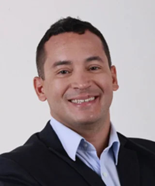

Comissão Organizadora
A programação científica está sob responsabilidade de um time multidisciplinar de especialistas:

Dr. Antonio Douglas
Dr. Ilan Pedrosa

Dra. Cristiana Tavares
Dr. Nildevande Firmino

Dr. Thiago Apolinário